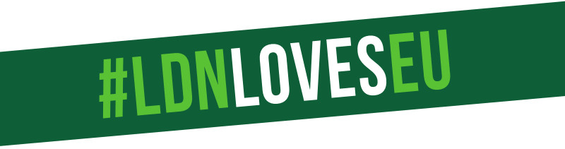

What is LDN♥EU?
London is home to a third of all the EU27 citizens living in the UK - more than 1 million in total.
The majority of people in London voted to remain in the EU. But since the referendum, successive Conservative Governments have used EU27 citizens across the UK (and UK citizens living elsewhere in the EU) as bargaining chips - leaving them in limbo and feeling unwelcome in their own homes.
We say enough is enough. We will not tolerate discrimination against anyone who lives in this city, or beyond.
Being a Londoner is not a question of where you were born, the language you speak, your religion, or the colour of your skin. It’s about being open-minded, sharing in our common humanity, and remaining united in diversity. Scott's LDNlovesEU campaign celebrates migration, which is the lifeblood of London and makes this one of the world's most diverse, culturally rich and vibrant cities.
Join our movement by demonstrating that you stand with your fellow Londoners, speaking out against the Government's discriminatory policies, and showing the EU that we are truly Europeans at heart.
How can you get involved?
 Download this leaflet providing more information on the campaign, and distribute it widely!
Download this leaflet providing more information on the campaign, and distribute it widely!
 Take a selfie holding up the poster on the back of the leaflet (or available separately here), and post it to social media using the hashtag #LDNlovesEU.
Take a selfie holding up the poster on the back of the leaflet (or available separately here), and post it to social media using the hashtag #LDNlovesEU.
 Record a video telling the world what you love about living in London, and why its diversity is important to you. Post this on social media using the hashtag #LDNlovesEU.
Record a video telling the world what you love about living in London, and why its diversity is important to you. Post this on social media using the hashtag #LDNlovesEU.
Download this page and write about why you love and value London's diversity. The post it on social media using the hashtag #LDNlovesEU.
 Display the poster on a wall, in a window – or anywhere you can think of to show solidarity with all the Londoners in our great city.
Display the poster on a wall, in a window – or anywhere you can think of to show solidarity with all the Londoners in our great city.

*The campaign users a number of statistics, the references for them can be found here.